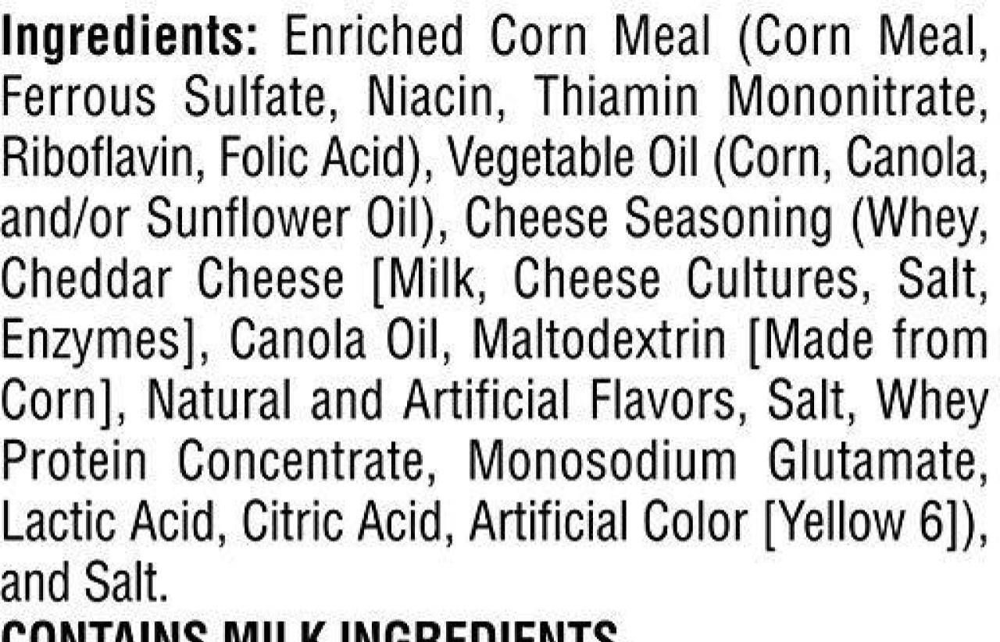
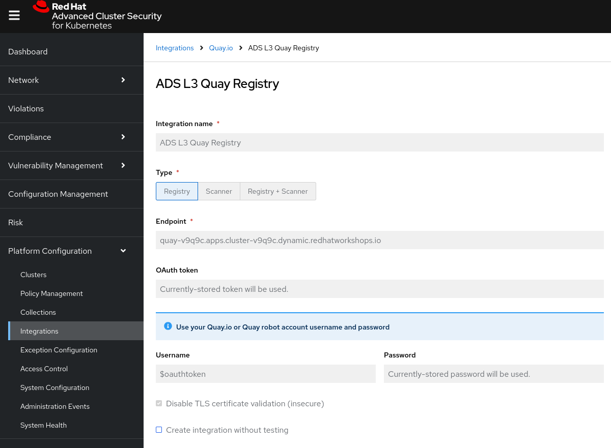
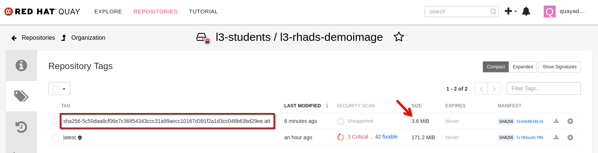

SBOMs (Software Bills of Materials)

|
As explained earlier in this chapter, SBOMs are basically the artifact "ingredients list", listing all contained packages and components, as well as license information. Creating SBOMs as part of the build process is not only a good security practice (for all the reasons outlined in the introduction to this chapter) - as per regulations, they are also becoming mandatory for selling software to government agencies. |
||
|
|||
Creating SBOMs
With that said - when we create artifacts, we also want to create SBOMs of these artifacts, typically as part of our CI toolchain.
|
Just as a side note - talking to customers, we know that many customers are already creating SBOMs in their toolchain. BUT the majority of customers is just creating SBOMs to "tick a regulatory box" - they are not leveraging the valuable information contained in them. They just file it away somewhere, "just in case we need it". With tools such as Trusted Profile Analyzer (TPA), we can use that information, identifying the "blast radius" if a vulnerability is identified and informing remediation efforts. However, TPA itself doesn’t create SBOMs and as long as the SBOMs are in SPDX or CycloneDX format will consume them, regardless how they were created. TPA 2.1 accepts CycloneDX versions 1.3, 1.4, 1.5 and 1.6, and System Package Data Exchange (SPDX) versions 2.2, and 2.3 in |
syft
As an Open Source solution for customers who don’t have any means of creating SBOMs today, we recommend using syft:
Syft is an open-source CLI tool and library that generates Software Bill of Materials (SBOMs) from container images, filesystems, and archives. It provides detailed visibility into packages, dependencies, and components within software artifacts.
Origin & Development Syft was created and is sponsored by Anchore, a software supply chain security company, and is released under the Apache 2.0 License. The tool was designed to address the growing need for automated SBOM generation in cloud-native environments.
Key Capabilities - Supports multiple container image formats (OCI, Docker, Singularity) - Generates SBOMs in multiple standard formats including SPDX, CycloneDX, and Syft’s native format - Deep inspection capabilities that can identify dependencies nested multiple levels deep
Using syft
To understand what syft is doing, simply run syft $IMAGE and it will download the image from the registry and catalogue it.
(First, we’re checking that the $IMAGE variable for our example image still exists - also, the copy-image-to-quay.sh script creates a dockerconfig to login to Quay)
cd /workspace/l3-enablement-helpers/security-concepts
if [ -z "${IMAGE}" ]; then
source ./copy-image-to-quay.sh
fi
echo "\$IMAGE is: $IMAGE"
syft $IMAGEYou can see below that syft not only parsed the image and its contents, but also the java application that was packaged inside it, as it identified the smallrye-* components that were used as dependencies.
syft $IMAGE
✔ Parsed image sha256:771d0be00ec2b488e35925f2a9bfe27aa013afaedc40950f9c54430ef524a5c4
✔ Cataloged contents 5c50daa8cf06e7c36854343ccc31a99aecc10167d391f2a1d3cc048b63bd29ee
├── ✔ Packages [414 packages]
├── ✔ Executables [826 executables]
├── ✔ File digests [6,179 files]
└── ✔ File metadata [6,179 locations]
NAME VERSION TYPE
alsa-lib 1.2.5-4.el8 rpm
aopalliance 1.0 java-archive
aopalliance 1.0-20.module+el8.3.0+6804+157bd82e rpm
[...]
smallrye-mutiny-vertx-auth-common 2.24.1 java-archive
smallrye-mutiny-vertx-bridge-common 2.24.1 java-archive
smallrye-mutiny-vertx-core 2.24.1 java-archive
smallrye-mutiny-vertx-runtime 2.24.1 java-archive
smallrye-mutiny-vertx-uri-template 2.24.1 java-archive
[...]
xorg-x11-fonts-Type1 7.5-19.el8 rpm
xz-libs 5.2.4-3.el8 rpm
zlib 1.2.11-17.el8 rpmTo get a full report in CycloneDX or SPDX format, we have to specify the format and direct it to a file:
syft $IMAGE --enrich all --output cyclonedx-json=demo-image-sbom-syft.json|
We have added We will upload and manage SBOMs in Module 8: Trusted Software Supply Chain with TPA but if you’d like to take a quick look, we’ll have to format it ( HINT: Exit |
roxctl
roxctl is a command-line interface (CLI) for running commands on Red Hat Advanced Cluster Security for Kubernetes (RHACS), a comprehensive Kubernetes-native security platform. While roxctl supports various security operations, version 4.7 introduced SBOM generation capabilities as a Technology Preview feature.
From Red Hat Advanced Cluster Security 4.7, users can generate SBOMs from the command line or through the user interface. SBOMs can be generated from Scanner V4 image scans via the UI, CLI (roxctl image sbom), and API (/api/v1/images/sbom). Currently, only scans executed via Central are supported, with delegated scanning planned for future releases.
Context
The SBOM generation feature was introduced in response to the growing importance of SBOMs for supply chain security, especially in light of the NIST Executive Order from 2021. The roxctl tool integrates into CI/CD pipelines for automated security scanning, policy enforcement, and now SBOM generation alongside RHACS’s broader security capabilities including vulnerability management, runtime threat detection, and compliance checking.
Architecture
The major difference between standalone SBOM generators and roxctl is that the scan / cataloging of components does not happen in the task execution environment (in our case, the terminal pod, in a real CI the task pod) - but on the ACS Cluster. No image is pulled locally for inspection.
The roxctl CLI is just an interface that tells the cluster what to do.
|
As a consequence, everything that HINT: Exit This script creates a "Registry Integration" in ACS. It basically tells ACS which authentication method and credentials to use when accessing a specific registry. During the terminal pod startup, we’re checking that the integration exists and if not, create it - all via the REST API.

But we’re digressing from the topic at hand… 🤷 |
Using roxctl
Creating an SBOM using roxctl is as simple as roxctl image sbom. The image subcommand allows us to
-
Scan an image for vulnerabilities (
roxctl image scan) -
Scan and verify policy violations in the ACS list of policies (
roxctl image check) -
Generate an SBOM (
roxctl image sbom)
Try them all out, play with the results in different formats and check roxctl image --help as well as the help for the sub-sub-commands such as roxctl image scan --help
To generate an SBOM, just pass in the image you’re interested in.
(First, we’re checking that the $IMAGE variable for our example image still exists)
cd /workspace/l3-enablement-helpers/security-concepts
if [ -z "${IMAGE}" ]; then
source ./copy-image-to-quay.sh
fi
echo "\$IMAGE is: $IMAGE"
# using jq for readability and less since it's large
roxctl image sbom --image=$IMAGE | jq | lessHINT: Exit less with q or Q
So, as you can see at the beginning of the file, roxctl generates an SPDX (not CycloneDX) SBOM - which is fine, since both formats are very well established
{
"spdxVersion": "SPDX-2.3",
"dataLicense": "CC0-1.0",
"SPDXID": "SPDXRef-DOCUMENT",
"name": "sha256:5c50daa8cf06e7c36854343ccc31a99aecc10167d391f2a1d3cc048b63bd29ee",
"documentNamespace": "https://quay-v9q9c.apps.cluster-v9q9c.dynamic.redhatworkshops.io/l3-students/l3-rhads-demoimage-2fe8c138-572d-44e6-90fa-43b5d0353ca8",
"comment": "Tech Preview - generated for 'quay-v9q9c.apps.cluster-v9q9c.dynamic.redhatworkshops.io/l3-students/l3-rhads-demoimage:latest'",
"creationInfo": {
"creators": [
"Tool: Claircore-v1.5.38",
"Tool: scanner-v4-matcher-4.8.5"
],
"created": "2025-10-31T13:04:06Z"
},
"packages": [
{
"name": "ubi8-minimal-container",
"SPDXID": "SPDXRef-Package-374",
"versionInfo": "8.5-240.1648458092",
"packageFileName": "root/buildinfo/Dockerfile-ubi8-minimal-8.5-240.1648458092",
"downloadLocation": "NOASSERTION",
"filesAnalyzed": true,
"primaryPackagePurpose": "SOURCE"
},
To save it, we just use standard Linux mechanisms:
roxctl image sbom --image=$IMAGE > demo-image-sbom-roxctl.jsonOWASP CycloneDX maven plugin
|
For sake of completeness we’re also mentioning the CycloneDX However, based on its nature (a maven plugin) it can only generate SBOMs for Java artifacts. It obviously can not generate an SBOM for the container image that the Java Application will run in - nor for the application server (in case of |
The CycloneDX Maven plugin generates CycloneDX Software Bill of Materials (SBOM) containing the aggregate of all direct and transitive dependencies of a project. It provides three main goals: makeBom (creates a BOM for each Maven module with its dependencies), makeAggregateBom (creates an aggregate BOM at build root with dependencies from the whole multi-modules build), and makePackageBom (creates a BOM for each Maven module with war or ear packaging).
Origin & Development
The plugin is copyright OWASP Foundation and is released under the Apache 2.0 license. The project was incepted in 2017 and has been actively maintained with regular updates,hosted on GitHub under the CycloneDX organization.
Key Plugin Features
By default, the BOM(s) will be attached as additional artifacts with cyclonedx classifier (can be customized by setting cyclonedx.classifier) and xml or json extension during a Maven install or deploy. The plugin offers extensive configuration options including:
-
Multiple output formats (XML, JSON, or both)
-
Configurable CycloneDX schema versions (currently supporting up to 1.6)
-
Scope filtering (compile, provided, runtime, system, test scopes)
-
Component exclusion capabilities by groupId or artifactId
-
License information inclusion options
-
Serial number generation for BOM tracking
Here is an example configuration that will generate a sbom.json in the project’s target directory during the maven package phase:
<project>
<modelVersion>4.0.0</modelVersion>
<groupId>com.example</groupId>
<artifactId>my-web-app</artifactId>
<version>1.0.0</version>
<packaging>war</packaging>
<build>
<plugins>
<plugin>
<groupId>org.cyclonedx</groupId>
<artifactId>cyclonedx-maven-plugin</artifactId>
<version>2.8.0</version>
<configuration>
<!-- Project type -->
<projectType>application</projectType>
<!-- CycloneDX schema version -->
<schemaVersion>1.6</schemaVersion>
<!-- Include serial number for tracking -->
<includeBomSerialNumber>true</includeBomSerialNumber>
<!-- Dependency scopes to include -->
<includeCompileScope>true</includeCompileScope>
<includeProvidedScope>true</includeProvidedScope>
<includeRuntimeScope>true</includeRuntimeScope>
<includeSystemScope>true</includeSystemScope>
<includeTestScope>false</includeTestScope>
<!-- License details -->
<includeLicenseText>true</includeLicenseText>
<!-- Output format (xml, json, or all) -->
<outputFormat>json</outputFormat>
<!-- Output file name -->
<outputName>sbom</outputName>
<!-- Output directory -->
<outputDirectory>${project.build.directory}</outputDirectory>
</configuration>
<executions>
<execution>
<phase>package</phase>
<goals>
<goal>makePackageBom</goal>
</goals>
</execution>
</executions>
</plugin>
</plugins>
</build>
</project>Attesting SBOMs
As we have discussed in the previous exercise, an SBOM is an acceptable, even predefined attestation type that cosign attest accepts and ec validate can parse and work with:
The pre-defined predicate types are:
-
slsaprovenance - SLSA Provenance v0.1
-
slsaprovenance02 - SLSA Provenance v0.2
-
slsaprovenance1 - SLSA Provenance v1.0
-
link - in-toto link attestation
-
spdx - SPDX SBOM format
-
spdxjson - SPDX SBOM in JSON format
-
cyclonedx - CycloneDX SBOM format
-
vuln - Vulnerability scan attestation
-
openvex - OpenVEX attestation
-
custom - Custom attestation (default)
We have created SBOMs of our image above, so naturally we will attest (= sign & attach) them to this image:
(First, making sure that we still have the $IMAGE variable set and the $SIGSTORE_ID_TOKEN hasn’t expired)
cd /workspace/l3-enablement-helpers/security-concepts
if [ -z "${IMAGE}" ]; then
source ./copy-image-to-quay.sh
fi
echo "\$IMAGE is: $IMAGE"
source ./get-access-token.shWith these set again, attesting the SBOMs we have created earlier is as simple as
cosign attest --predicate demo-image-sbom-syft.json --type cyclonedx $IMAGE
cosign attest --predicate demo-image-sbom-roxctl.json --type spdxjson $IMAGEA cosign tree will now show us the SBOM attestation associated with this image:
cosign tree $IMAGEcosign tree $IMAGE
📦 Supply Chain Security Related artifacts for an image: quay-v9q9c.apps.cluster-v9q9c.dynamic.redhatworkshops.io/l3-students/l3-rhads-demoimage:latest
└── 💾 Attestations for an image tag: quay-v9q9c.apps.cluster-v9q9c.dynamic.redhatworkshops.io/l3-students/l3-rhads-demoimage:sha256-5c50daa8cf06e7c36854343ccc31a99aecc10167d391f2a1d3cc048b63bd29ee.att
├── 🍒 sha256:6e1bd0b49e31237c28d14b0e90f69c532defd47685a7ea1e5920e63924adf378
├── 🍒 sha256:2c9aaacbdcad589845dfd37f830e878673e41aaa79a5623d23ff152c69fdb5b9
├── 🍒 sha256:b37ce919cda4683964533680c5eec92bedc9df10a4e5f4236d68f084a70fa872
└── 🍒 sha256:72af2fa19513e226e73e70c567bf3d8b763524f0607e09357301dadb1ddb432c
└── 🔐 Signatures for an image tag: quay-v9q9c.apps.cluster-v9q9c.dynamic.redhatworkshops.io/l3-students/l3-rhads-demoimage:sha256-5c50daa8cf06e7c36854343ccc31a99aecc10167d391f2a1d3cc048b63bd29ee.sig
└── 🍒 sha256:853aa60efb46da00ef2fe35f9343f68c269be888ed3202274df55ff275a780c5|
Just from the The same image in {quay_url}/repository/l3-students/l3-rhads-demoimage?tab=tags[Quay^,window="quay"] just shows us one attestation tag (which contains all of them).

Given the size of the attestation, you can guess that it contains considerable payload (instead of just a bit of text that we attested earlier) - but we can only see it when using |
So, with the knowledge from the previous chapter, we know that a simple cosign download attestation will just give us the in-toto "envelope" with the "Statement" as base64 encoded payload.
If we want to browse what we have, we need to go one level deeper, using jq and base64 --decode:
HINT: Exit less with q or Q
cosign download attestation $IMAGE | jq -r '.payload' | base64 -d | jq | lessInstead of scrolling back and forth with less in a huge list of attestations, we can also check what attestation types (predicateTypes) we have and then only download and inspect the ones we’re interested in:
cosign download attestation $IMAGE | jq -r '.payload' | base64 -d | jq -r '.predicateType' | sort -ucosign download attestation $IMAGE | jq -r '.payload' | base64 -d | jq -r '.predicateType' | sort -u
https://cyclonedx.org/bom
https://example.com/predicate/v1
https://slsa.dev/provenance/v0.2
https://spdx.dev/Documentcosign download attestation $IMAGE --predicate-type "https://cyclonedx.org/bom" | jq -r '.payload' | base64 -d | jq | lessSimple Signature and Integrity Verification
In the previous chapter (and to more extent in Module 9: Attestations, Tekton Chains & Enterprise Contract with TAS) we used Enterprise Contract / Conforma for the basic verification.
If we simply want to check the integrity and certificate claims (OIDC Identity and OIDC Issuer) without applying policies, we can use cosign verify-attestation:
So, for our image, to verify an attestation (or more than one if we have more of the same type) we would issue
-
using the
cosignbuilt-in predicate type
cosign verify-attestation --type spdxjson --certificate-identity pipeline-auth@demo.redhat.com --certificate-oidc-issuer $SIGSTORE_OIDC_ISSUER $IMAGE | jq -r '.payload' | base64 -d | jq | lessor
-
using the explicit predicate type
cosign verify-attestation --type https://spdx.dev/Document --certificate-identity pipeline-auth@demo.redhat.com --certificate-oidc-issuer $SIGSTORE_OIDC_ISSUER $IMAGE | jq -r '.payload' | base64 -d | jq | less
We again added jq to get to the base64 encoded payload (our attestation / SBOM in question and piped it to less since the SBOMs are large). Exit less with q or Q
|